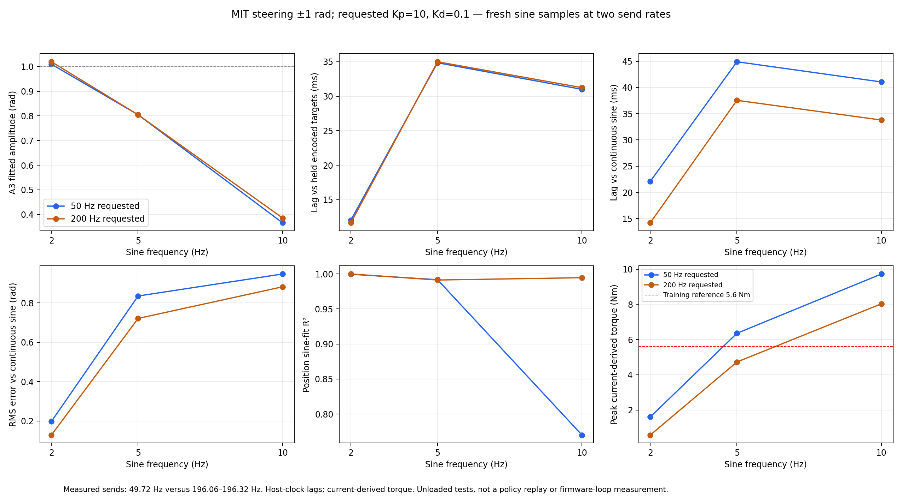
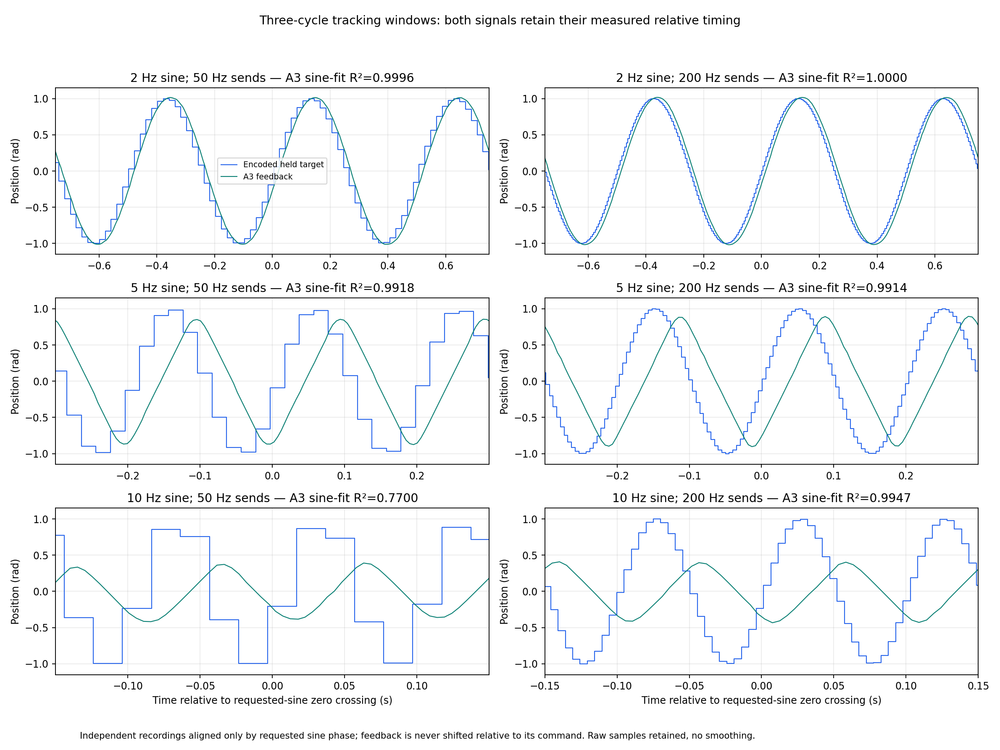

Matched requested Kp=10 / Kd=0.1 / amplitude ±1 rad, steering free, same supply and unchanged firmware limits confirmed by user.
Partial improvement: 7–8 ms less lag relative to the intended continuous sine and much smoother 10 Hz feedback. Lag relative to commands actually sent is almost unchanged; high-frequency amplitude remains insufficient.
All three new CF shutdowns remain unconfirmed (mode 5). At 10 Hz, 11.319% of A1 samples exceed the training 5.6 Nm reference. This is not a balancing or torque-protection validation. Sending fresh sine targets at 200 Hz is not repeating a 50 Hz policy's held target four times.
Full conclusions, definitions, timing, safety and reproduction · CSV · JSON and source hashes
| Sine Hz | Nominal MIT send Hz | Measured send Hz | A3 amplitude rad | Held-target lag ms | Continuous-sine lag ms | Held-target RMS rad | Continuous-sine RMS rad | Position R² |
|---|---|---|---|---|---|---|---|---|
| 2 | 50 | 49.73 | 1.0098 | 12.04 | 22.09 | 0.1200 | 0.1974 | 0.9996 |
| 2 | 200 | 196.32 | 1.0198 | 11.65 | 14.20 | 0.1146 | 0.1282 | 1.0000 |
| 5 | 50 | 49.72 | 0.8047 | 34.85 | 44.90 | 0.6806 | 0.8356 | 0.9918 |
| 5 | 200 | 196.28 | 0.8047 | 35.00 | 37.55 | 0.6968 | 0.7214 | 0.9914 |
| 10 | 50 | 49.72 | 0.3663 | 30.99 | 41.05 | 0.8457 | 0.9475 | 0.7700 |
| 10 | 200 | 196.06 | 0.3860 | 31.24 | 33.79 | 0.8566 | 0.8823 | 0.9947 |

Both traces from each recording are translated together to a requested-sine phase origin; feedback is not separately shifted or smoothed.

Offline analysis only. Original logs and earlier reports preserved; deployment rates/configuration unchanged.